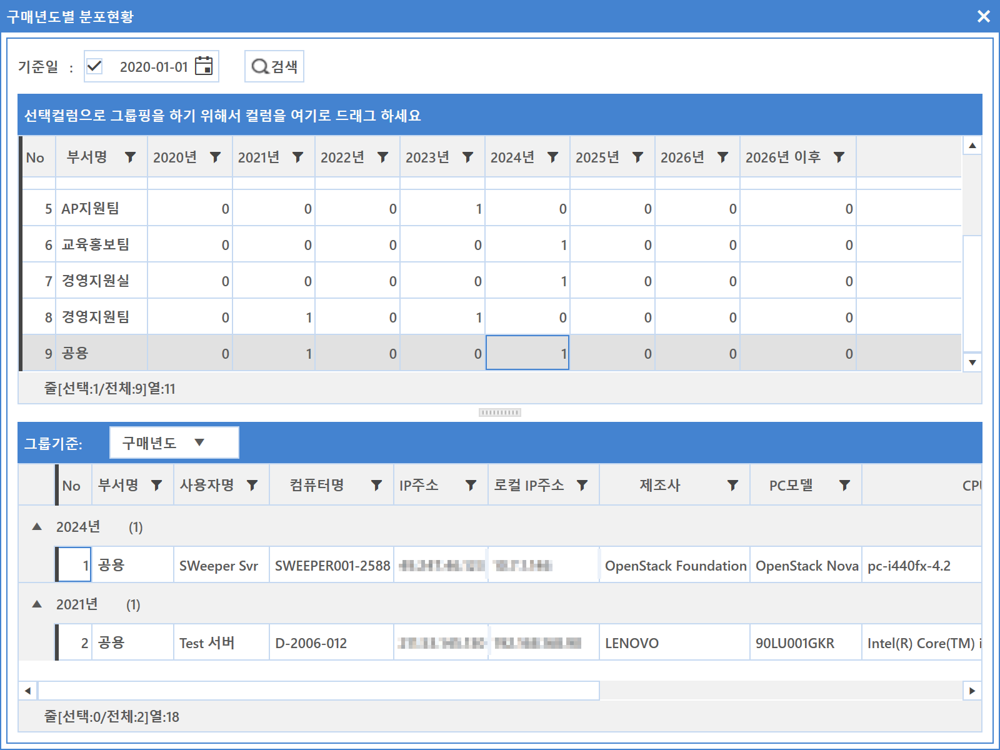

4-3-2. 분포현황
4-3-2. 분포현황
Source: https://www.sweeper.or.kr/etc/manual/433.html
4-3-2. 분포현황
4. 일반정보 ›› 4-3. 구매시기 관리 ››


장비별로 구매년도 분포 현황을 쉽게 확인할 수 있습니다.

입력 기준일에 해당하는 데이터를 부서별로 확인할 수 있습니다.

참고사항
검색된 결과는 하위부서 수량을 포함하지 않습니다.
© Copyright SWeeper Inc.. All Rights Reserved